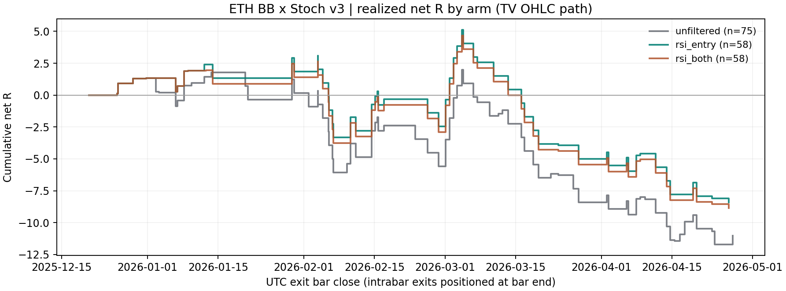

加上「只在超卖做多、超买做空」的 RSI 门后，同一段历史里过滤后仍为净亏损：58笔完整交易， 净-8.41R，胜率43.10%，PF 0.73； 未过滤的 v2 是75笔、净-11.02R、PF 0.70。 总亏损少了 2.61R，方向上更少亏。
但少亏主要来自少做单，不是每笔变好：每笔净收益 -0.1469R → -0.1450R，几乎没动（+0.0019R/笔）， 入场数 75 → 58 笔。同时最大连续亏损从 6 笔变成 12 笔，变差了。没有证明优于匹配随机入场。本轮没有调任何参数，V1 门禁未加入。
Pine v3 尚未保存到 TradingView：本机没有已登录的 TradingView 浏览器会话（Chrome 扩展未连接，内置浏览器无 cookie），保存需要 Owner 自己登录或连上扩展。源码已在仓库，可直接粘贴到 Pine 编辑器。
| 组 | 入场 | 反向/退出 |
|---|---|---|
unfiltered | 原 v2 组合信号 | 原 v2 信号 |
rsi_entry（主，= 保存的 Pine v3） | 组合信号 ∩ RSI 区域 | 原 v2 信号，未过滤 |
rsi_both（事前冻结的敏感性） | 组合信号 ∩ RSI 区域 | 同样被过滤 |
RSI 取 ChartPrime 源码里的 ta.rsi(close, 14) 曲线，和策略同图 5m； 严格 <30 才允许做多、严格 >70 才允许做空， 等于阈值不放行，在组合信号那根 5m 收盘同根判定。不使用该指标的 SAR 翻转/强信号菱形， 那是另一个事件。阈值与周期是公开源码默认值；本机没有可用的 TradingView 会话， 没有核实 Owner 图上保存的实时参数，若不是 14/30/70 则本报告数字需按其参数重跑。
主口径刻意只过滤入场：如果连反向退出也要等 RSI 极值，过滤就会把亏损单留在场内， 这在 rsi_both 那一行看得见，它是敏感性披露，不是可选成绩。
| 候选 | 可用信号 | RSI 放行 | 放行率 | 信号根 RSI 中位数 |
|---|---|---|---|---|
| 全部 | 111 | 74 | 66.67% | — |
| 做多候选（需 RSI<30） | 56 | 34 | 60.71% | 28.42 |
| 做空候选（需 RSI>70） | 55 | 40 | 72.73% | 75.37 |
unfiltered 与上一轮冻结账本逐笔一致（{"status": "passed", "trades": 76, "results_sha256": "af6d39ca59c51b859c6e714fbf22466fbcc52fbd9b4ec3d96bded5667e49d492", "trades_sha256": "0198d52e6b9d8643260926f8eaf251bbd2cbc4af402b1453d6a25f31e4561888"}）， 这是回归校验不是新评分。
RSI 门其实拦不掉多少：BB 带外 + Stoch 极区的信号本身已经处在极端位置， 做多候选的 RSI 中位数就是 28.42、做空候选是 75.37， 本来就贴着 30/70。111 个候选只被拦掉 37 个；序贯占仓后实际入场从 76 笔降到 59 笔。这个指标和原信号高度重叠， 不是一个独立的新条件。
| 组 | 完整交易 | 毛 R | 净 R | 净胜率 | PF（R） | 已实现回撤 R | 配对数 | 随机均值 R/笔 | 配对超额 R/笔 | 月块 p |
|---|---|---|---|---|---|---|---|---|---|---|
| v2 原版（无 RSI 过滤）·TV路径 | 75 | -6.02 | -11.02 | 45.33% | 0.70 | 13.73 | 74 | -0.116 | -0.033 | 0.7500 |
| v3 主口径（RSI 只过滤入场）·TV路径 | 58 | -4.54 | -8.41 | 43.10% | 0.73 | 13.54 | 56 | -0.156 | +0.008 | 0.4688 |
| 敏感性（RSI 同时过滤反向退出）·TV路径 | 58 | -4.99 | -8.86 | 43.10% | 0.71 | 13.54 | 56 | -0.152 | -0.004 | 0.5312 |
| v2 原版（无 RSI 过滤）·先走逆向 | 75 | -6.02 | -11.02 | 45.33% | 0.70 | 13.73 | 74 | -0.116 | -0.033 | 0.7500 |
| v3 主口径（RSI 只过滤入场）·先走逆向 | 58 | -4.54 | -8.41 | 43.10% | 0.73 | 13.54 | 56 | -0.156 | +0.008 | 0.4688 |
| 敏感性（RSI 同时过滤反向退出）·先走逆向 | 58 | -4.99 | -8.86 | 43.10% | 0.71 | 13.54 | 56 | -0.152 | -0.004 | 0.5312 |
PF = 盈利交易净 R 之和 / 亏损交易净 R 绝对值之和；净胜率扣手续费后计算；回撤是完整交易结算后的 累计净 R 回撤，不含持仓浮动回撤。两条路径只是预先冻结的成交顺序敏感性，不得挑较好者当成绩。
这段样本里两条路径结果逐笔相同（上一轮 v2 冻结账本也是如此）：主口径只有 5 根持仓 K 线同时够到止盈与保护价，而这几根里先后顺序没有改变结果。 所以这条敏感性在本样本上没有分辨力，不能当作"路径无关"已被证明。

序贯账本里删掉一些入场会改变后续机会，净差不能全部算在"被删掉的那些单"头上。 因此对每个可用原始信号独立回放一笔 1 ETH（忽略占仓），按 RSI 放行/拦截分组：
| 事件级独立回放 | 笔数 | 净 R 合计 | 净 R/笔 | 净胜率 |
|---|---|---|---|---|
| RSI 放行 | 73 | -8.12 | -0.1113 | 47.95% |
| RSI 拦截 | 37 | -7.83 | -0.2116 | 45.95% |
放行组减拦截组的净 R/笔差为 +0.1004， 在事件集合内做 9999 次种子化标签置换，单侧 p = 0.3130。 放行组与拦截组的差异在标签置换零假设下不显著。两组都是亏的——放行组 -0.1113R/笔、 拦截组 -0.2116R/笔，所以这个门顶多是"亏得少一点"与"亏得多一点"之分， 不是把赢家从输家里挑出来。这只检验"RSI 区域标签是否含信息"，不是收益证明；事件可重叠， 不构成可执行的单仓账户。共 111 个事件，其中 1 笔在末端未平仓已排除。
| 组 | 完整交易 | 毛 R | 净 R | 净胜率 | PF（R） | 已实现回撤 R | 配对数 | 随机均值 R/笔 | 配对超额 R/笔 | 月块 p |
|---|---|---|---|---|---|---|---|---|---|---|
| 时间前半 | 26 | +1.40 | -0.33 | 57.69% | 0.97 | 6.40 | 26 | -0.142 | +0.130 | 0.1250 |
| 时间后半 | 32 | -5.94 | -8.08 | 31.25% | 0.58 | 13.54 | 30 | -0.169 | -0.097 | 0.8750 |
| 多头 | 30 | -1.82 | -3.82 | 40.00% | 0.76 | 5.89 | 30 | -0.203 | +0.076 | 0.3125 |
| 空头 | 28 | -2.72 | -4.59 | 46.43% | 0.70 | 8.95 | 26 | -0.103 | -0.070 | 0.7188 |
| 2025-12 | 4 | +1.62 | +1.35 | 100.00% | N/A | 0.00 | 4 | -0.096 | +0.433 | 0.5000 |
| 2026-01 | 8 | +1.04 | +0.50 | 62.50% | 1.16 | 1.07 | 8 | -0.062 | +0.125 | 0.5000 |
| 2026-02 | 17 | -1.08 | -2.21 | 41.18% | 0.79 | 6.40 | 17 | -0.214 | +0.084 | 0.5000 |
| 2026-03 | 16 | -3.58 | -4.64 | 25.00% | 0.54 | 10.13 | 16 | -0.237 | -0.054 | 1.0000 |
| 2026-04 | 13 | -2.55 | -3.41 | 38.46% | 0.51 | 3.94 | 11 | -0.041 | -0.259 | 1.0000 |
时间切点固定为数据起点到研究终点的中点：2026-02-24T05:00:00+00:00。前后半、月度只是同一固定规则的 稳定性诊断，不是独立重复试验，也没有用来选参数。
| 最终退出原因 | 笔数 | 其中已平半 |
|---|---|---|
| 平半后保本 | 10 | 10 |
| 完整反向信号退出 | 16 | 16 |
| 初始止损 | 28 | 0 |
| 上移保护价已被越过 | 4 | 4 |
完整交易中 30 笔触轨平半；最大连续净亏损 12 笔， 平均盈利 +0.90R、平均亏损 -0.94R， 平均持仓约 22.89 小时（按覆盖 K 线根数估计）。 固定 1 ETH 归一化下，主口径毛盈亏 -248.47 USDT、 手续费 266.84 USDT、净 -515.31 USDT； 这是仓位归一化数字，不是账户收益率。
每笔实际入场提前抽 5 个同 ETH、同方向、同 UTC 月、同因果波动桶（TR-SMA14/close 相对前 120 个值的 三分位）的随机入场，先冻结抽样再读结果，未平仓也不重抽；随机入场使用同组的平半、保本、反向、 3% 止损与费用规则。主口径共抽 295 个对照，其中 3 个末端未完成， 完整配对 56 笔、未配对 3 笔。按 5 个 UTC 月整体翻转差值符号， 单侧 p = 0.4688。月份数少，显著性分辨率有限。
源码冻结提交：3a44171f936076e423eaf5fa69c6ab449c57db45。Pine v3 SHA256：11c3ccaf34732aab337158f1e533a8b279094e7749b0ccd8fad4f11a08eb1493； 父版 v2：d329a60a4b355ee47c530277e8f04aabab0290603ecc9ab49fcd1c8949eb01ea；ChartPrime 源：ca5785ff28a10a51c9d08ec60af14491e62ca50bb56ed3bbc39698aadde51098。 只读前缀 SHA256：fdc5e2fe276b3f6662b9891108bc7eae26243c465de3215c4b3174f717c22900。程序在任何价格读取前核对 HEAD 的 builder、配置、 计划与两个 Pine 字节一致，否则拒绝运行。验证记录：{"focused_tests": {"command": ".venv/bin/python -m pytest tests/evaluation/test_bb_stoch_rsi_study.py tests/evaluation/test_bb_stoch_replay.py tests/evaluation/test_eth_bb_stoch_study.py tests/test_ma_stoch_rsi_filter.py -q", "passed": 24, "failed": 0}, "broad_gates": {"command": ".venv/bin/python -m pytest tests/boundaries tests/causality tests/parity -q", "passed": 468, "failed": 7, "causes": {"existing_artifact_missing_source_commit": 5, "existing_migration_hash_mismatches": 2}, "scope": "identical to the failures already disclosed in HANDOFF for the previous rounds; unrelated to this experiment and not bypassed"}, "baseline_parity": {"status": "passed", "trades": 76, "results_sha256": "af6d39ca59c51b859c6e714fbf22466fbcc52fbd9b4ec3d96bded5667e49d492", "trades_sha256": "0198d52e6b9d8643260926f8eaf251bbd2cbc4af402b1453d6a25f31e4561888"}, "economic_ledger_checks": 2439, "path_sensitivity_discriminated": false, "native_tradingview_parity": false, "pine_saved_to_tradingview": false, "pine_compiled_natively": false, "holdout_consumed": false}。
cd /Users/zhangzc/fable-trading
.venv/bin/python -m pytest tests/evaluation/test_bb_stoch_rsi_study.py tests/evaluation/test_bb_stoch_replay.py \
tests/evaluation/test_eth_bb_stoch_study.py tests/test_ma_stoch_rsi_filter.py -q
.venv/bin/python -m yoyo.evaluation.bb_stoch_rsi_study
.venv/bin/python -m yoyo.evaluation.bb_stoch_rsi_report
python3 scripts/md_to_html.py analysis/p1_eth_bb_stoch_rsi_filter_20260916.md --out-dir analysis/html
逐笔、对照抽签、事件级账本与摘要保存在 experiments/active/exp-eth-bb-stoch-rsi-filter-20260916-v1/；数据未入 git。